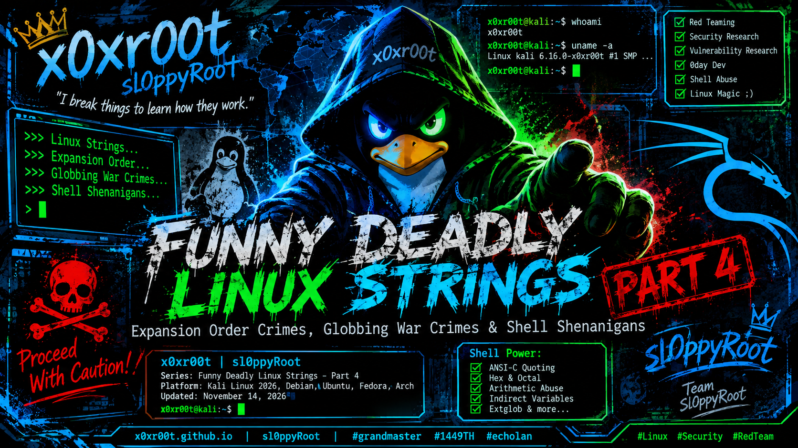

Author: x0xr00t
Series: Funny Deadly Linux Strings – Part 4
Platform: Kali Linux 2026, Debian, Ubuntu, Fedora, Arch Linux and other modern Linux distributions.

Previously, on Terminal Abuse...
Well, look who's back for another episode of questionable shell behaviour.
In Part Three we played with parameter expansion, indirect variables, substring slicing, XOR transformations and command substitution. We made Bash do work that would normally have people reaching for sed, awk and a questionable amount of coffee.
But apparently that wasn't enough.
For Part Four, we're going deeper into the shell's expansion machinery. We're going to rebuild strings from hex, octal and ANSI-C escapes, make arithmetic expansions look like an incident report, bend globbing into shapes that should probably require a permit, and chain substitutions until a one-liner starts looking like it was recovered from a compromised jump box.
These are not magic tricks. They're demonstrations of how Bash and Zsh parse and expand input. The trick is understanding the order of operations rather than blindly pasting terminal spaghetti into a root shell.
Compatibility note: Most examples target Bash 5.x. Zsh-only examples are labelled. These are not automatically POSIX /bin/sh snippets, and they are not intended for Dash or Fish.
01. ANSI-C Quoting — Rebuilding Strings Like a Shell Archaeologist
Bash has a quoting form that lets you place escape sequences directly inside a string: $'...'.
#!/usr/bin/env bash
printf '%s\n' $'x0xr00t\nsl0ppyRoot\tterminal-abuse'Output:
x0xr00t
sl0ppyRoot terminal-abuseThat \n becomes a newline. The \t becomes a tab. Nothing spooky yet.
Now let's reconstruct a string from hexadecimal bytes:
printf '%s\n' $'\x78\x30\x78\x72\x30\x30\x74'Output:
x0xr00tAnd the octal version, because apparently one encoding wasn't enough:
printf '%s\n' $'\170\060\170\162\060\060\164'Output:
x0xr00tSame bytes. Different costume. The shell still ends up with the same string.
For a byte-by-byte view, use:
printf '%s' $'\x78\x30\x78\x72\x30\x30\x74' | od -An -tx1Output:
78 30 78 72 30 30 74This is useful when analysing weird strings, escape-heavy scripts and parser behaviour. It is not encryption. It is just another way to express bytes.
02. Quote Concatenation — One Word, Several Disguises
Shell quoting is not simply “quoted” or “not quoted”. Adjacent quoted and unquoted segments can become one argument after parsing.
printf '<%s>\n' 'x0x'"r"'00'"t'Output:
Four visual pieces. One resulting argument. The shell glues adjacent segments together before the command receives them.
Try mixing ANSI-C quoting into the same word:
printf '%s\n' 'x0' $'\x78' "r00t"Output:
x0
x
r00tThose are three arguments because the spaces separate them. Remove the spaces and the segments concatenate:
printf '%s\n' 'x0'$'\x78'"r00t"Output:
x0xr00tThat's the important distinction: quote boundaries affect expansion and word splitting, but adjacent segments can still form a single word.
03. Parameter Expansion Gets Weird — Defaults, Lengths and Slices
Part Three covered the basics. Now let's stack a few expansions together.
name=""
printf '<%s>\n' "${name:-fallback}"
printf '<%s>\n' "${name-fallback}"
name="x0xr00t"
printf '%s\n' "${#name}"
printf '%s\n' "${name:1:4}"
printf '%s\n' "${name: -3}"Output:
<>
7
0xr0
00t There is a difference between :- and -. The colon form uses the fallback when the variable is unset or empty. Without the colon, the fallback is used only when it is unset.
Now the string-replacement version:
value="red-team-red-team"
printf '%s\n' "${value/red/BLUE}"
printf '%s\n' "${value//red/BLUE}"
printf '%s\n' "${value//-/_}"Output:
BLUE-team-red-team
BLUE-team-BLUE-team
red_team_red_teamBuilt-in string surgery. No subprocess required.
04. Indirect Expansion — Variables Pointing at Variables
Let's make a variable hold the name of another variable, then ask Bash to follow the pointer.
FIRST="SECOND"
SECOND="THIRD"
THIRD="x0xr00t"
printf '%s\n' "${!FIRST}"
printf '%s\n' "${!SECOND}"Output:
THIRD
x0xr00t${!NAME} performs indirect expansion: Bash reads the value stored in NAME, treats that value as another variable name, and expands it.
Want a more explicit version? Bash namerefs can point one variable at another:
declare TARGET="sl0ppyRoot"
declare -n REF=TARGET
printf '%s\n' "$REF"
REF="x0xr00t"
printf '%s\n' "$TARGET"Output:
sl0ppyRoot
x0xr00tThat second assignment changed TARGET through the reference. Useful, powerful, and an excellent way to confuse someone reading a script at 03:00.
05. Arithmetic Expansion — Bitwise Shenanigans
Bash arithmetic expansion can do more than add two numbers. It supports bitwise operators too.
a=42
b=15
printf 'AND: %d\n' "$((a & b))"
printf 'OR: %d\n' "$((a | b))"
printf 'XOR: %d\n' "$((a ^ b))"
printf 'NOT: %d\n' "$((~a))"
printf 'SHIFT: %d\n' "$((a << 1))"Output:
AND: 10
OR: 47
XOR: 37
NOT: -43
SHIFT: 84And here's a tiny XOR round-trip without calling Python:
value=120
key=35
encoded=$(( value ^ key ))
decoded=$(( encoded ^ key ))
printf 'encoded=%d decoded=%d\n' "$encoded" "$decoded"Output:
encoded=91 decoded=120XOR with the same key reverses itself: (value ^ key) ^ key gives you the original value. This is a byte/number demonstration, not secure encryption. Bash arithmetic also uses signed machine integers, so it is not a general-purpose binary-data container.
06. Arrays — Index Gymnastics
Arrays are already handy. Now let's use offsets, lengths and indirect indexing.
parts=(x0 xr 00 t sl0 ppy Root)
printf '%s\n' "${parts[@]}"
printf 'count=%d\n' "${#parts[@]}"
printf 'slice=%s\n' "${parts[@]:1:3}"Output:
x0
xr
00
t
sl0
ppy
Root
count=7
slice=xr 00 tReassemble the pieces without an external utility:
joined=""
for part in "${parts[@]:0:4}"; do
joined+="$part"
done
printf '%s\n' "$joined"Output:
x0xr00tAnd a compact version using printf:
printf '%s' "${parts[@]:0:4}"That last one prints the selected elements back-to-back because the format string has no separator. Tiny detail. Big difference.
07. Globbing War Crimes — Extglob Enters the Chat
Bash extended globbing adds pattern operators that make filename matching considerably more expressive. First, enable it:
shopt -s extglobHere are a few patterns against strings using Bash's pattern matching:
value="report.log"
[[ $value == *.log ]] && echo "log file"
[[ $value == !(*.tmp) ]] && echo "not a tmp file"
[[ $value == +([[:alnum:]_.-]).log ]] && echo "safe-looking name"Output:
log file
not a tmp file
safe-looking nameSome of the extglob operators:
?() zero or one match
*() zero or more matches
+() one or more matches
@() exactly one alternative
!() anything except the patternFor a file-based demonstration, use a disposable directory so the pattern doesn't go sightseeing through your real home directory:
tmpdir="$(mktemp -d)"
touch "$tmpdir/a.log" "$tmpdir/b.tmp" "$tmpdir/c.log"
(
shopt -s extglob nullglob
cd "$tmpdir" || exit 1
printf 'non-tmp: %s\n' !(*.tmp)
)
rm -rf -- "$tmpdir"The cleanup is limited to the directory created by mktemp. Don't replace that variable with a path you haven't checked.
08. Zsh Glob Qualifiers — Because Bash Wasn't Complicated Enough
Zsh has its own glob qualifier syntax. These examples are for Zsh, not Bash.
zsh
files=( *(.) )
printf '%s\n' "${files[@]}"The (.) qualifier selects plain files in the current directory. A few more examples:
*(.) regular files
*(/) directories
*(om) sorted by modification time, newest first
*(.N) regular files; return an empty result instead of a no-match errorFor example, list regular files newest-first:
printf '%s\n' *(om.)Zsh's glob qualifiers are extremely useful, but don't paste them into Bash and then blame Linux when the shell throws a chair.
09. Nested Command Substitution — The Parentheses Have Parents
Command substitution captures output. Nesting it creates a sequence of evaluations from the inside out.
result="$(printf '%s' "$(printf '%s' "$(printf '%s' 'x0xr00t')")")"
printf '%s\n' "$result"Output:
x0xr00tNow let's combine transformations without hiding what is happening:
printf '[%s]\n' "$(
value="$(printf '%s' 'sl0ppyRoot')"
value="${value//Root/ROOT}"
printf '%s' "${value^^}"
)"Output:
[SL0PPYROOT]Nested substitution is not automatically evil. It just becomes difficult to audit when people compress every step into one line and remove all the useful whitespace.
10. The Obfuscation Sandwich — Hex + Expansion + Reassembly
Let's put several of these tricks together. This reconstructs a harmless label from hex bytes, changes part of it, and prints the result.
#!/usr/bin/env bash
set -u
bytes=(78 30 78 72 30 30 74)
label=""
for byte in "${bytes[@]}"; do
printf -v char '%b' "\\x${byte}"
label+="$char"
done
label="${label//x/X}"
label="${label^^}"
printf '%s\n' "$label"Output:
X0XR00TWhat's happening?
- The array stores hexadecimal byte values.
printf -vwrites the decoded character into a variable.- The loop reconstructs the original label.
- Parameter expansion replaces lowercase
x. - Case conversion turns the whole result uppercase.
Five operations. No external text-processing commands. Still readable enough that the next person doesn't need a séance to maintain it.
11. One-Liner Crime Scene — All the Moving Parts
Here's a deliberately dense but harmless example. It takes a hex string, decodes it, applies a substitution, and prints the result:
hex='x0xr00t'; printf '<%s>\n' "${hex//x/X}"Output:
And a more shell-heavy variant using ANSI-C quoting and concatenation:
printf '%s\n' $'x0''x''r00t'Output:
x0xr00tThe point is not to win a competition for the least readable command. The point is to recognize the transformations when you encounter them in scripts, logs, installers or suspicious command lines.
12. Security Research — Read the String Before You Run the String
Obfuscated shell strings show up in plenty of legitimate places: installers, compact scripts, challenge environments, test harnesses and security research. They also show up in suspicious scripts that want a reviewer to miss what is really being executed.
When investigating an unfamiliar command:
- Identify the interpreter. Bash, Zsh and
/bin/shdo not share every feature. - Separate quoting, expansion, word splitting and pathname expansion in your analysis.
- Decode data into a variable or file for inspection instead of piping it directly into a shell.
- Check command substitutions and any use of
evalorbash -c. - Use a disposable, isolated environment when execution is genuinely required.
- Never assume Base64, hex, XOR or string splitting makes content safe.
If you cannot explain what a command expands into, you do not understand the command yet.
That is the difference between recognizing shell syntax and actually understanding what the interpreter is about to do.
Closing Statement — x0xr00t
And there we go. Another episode of making a perfectly good terminal question its life choices.
We've rebuilt strings from hex and octal, glued quote fragments together, followed indirect variables, played with bitwise arithmetic, bent Bash globbing, wandered into Zsh qualifiers and nested command substitutions until the parentheses started multiplying.
Remember: shell obfuscation is not wizardry. It is syntax, parsing and expansion. Learn the order, inspect the result and stop treating mystery one-liners like collectible Pokémon.
Especially when the prompt says root.
Stay curious. Stay sharp. Keep your shell quoted. And don't execute terminal spaghetti just because somebody on the internet called it a “pro tip”.
You have been warned.
— x0xr00t | sl0ppyRoot
Red Teaming | Linux Security | Vulnerability Research | Shell Abuse
[ END OF TRANSMISSION ]